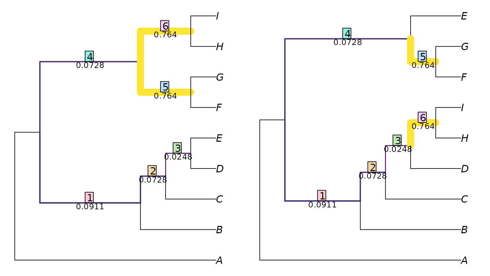

Calculate tree similarity with 'TreeDist'
Martin R. Smith
Source:vignettes/Using-TreeDist.Rmd
Using-TreeDist.RmdThis document should contain all you need to get started measuring tree distances with ‘TreeDist’. If you get stuck, please let me know so I can improve this documentation.
Loading trees
Instructions for loading phylogenetic trees into R can be found in a separate vignette. For these examples, we’ll enter two simple trees by hand:
Calculating distances
We can calculate distances between pairs of trees using the ‘TreeDist’ package.
First we’ll install the package. We can either install the stable version from the CRAN repository:
install.packages('TreeDist')or the development version, from GitHub – which will contain the latest features but may not be as extensively tested:
devtools::install_github('ms609/TreeDist')Then we’ll load the package in to R’s working environment:
Now the package’s functions are available within R. Let’s proceed to calculate some tree distances.
Pairs of trees
Calculating the distance between two trees is as simple as:
distance <- TreeDistance(tree1, tree2)The convenience function TreeDistance() returns the
variation of clustering information between two trees, normalized against the total
information content of all splits.
Multiple comparisons
If you have more than two trees to compare, you can send a list of
trees (class: list or multiPhylo) to the
distance comparison function. The function will then calculate the
distance between each tree in the first list and each tree in the
second.
oneTree <- ape::rtree(11)
twoTrees <- structure(list(one = ape::rtree(11), two = ape::rtree(11)),
class = 'multiPhylo')
threeTrees <- list(a = ape::rtree(11), b = ape::rtree(11), c = ape::rtree(11))
TreeDistance(oneTree, twoTrees)## one two
## 0.7826864 0.6856279
TreeDistance(twoTrees, threeTrees)## a b c
## one 0.8620894 0.7514794 0.7861809
## two 0.8556624 0.7150163 0.7658788Visualizing a matching
Generalized Robinson–Foulds
metrics, such as the variation of clustering information, rely on
matching each split within a tree with another split in the other
tree.
We can view an optimal matching:
VisualizeMatching(ClusteringInfoDistance, tree1, tree2)
This shows the six splits in tree 1, and the paired splits in tree
two.
Each split is labelled with a measure of its similarity, which is its
contribution to the total tree similarity score.
We can view this information in a format accessible for further examination in R with:
ClusteringInfoDistance(tree1, tree2, reportMatching = TRUE)## [1] 6.960578
## attr(,"matching")
## [1] 1 2 3 5 6 4
## attr(,"matchedSplits")
## [1] "B C D E | A F G H I => B C D H I | A E F G"
## [2] "C D E | A B F G H I => C D H I | A B E F G"
## [3] "D E | A B C F G H I => D H I | A B C E F G"
## [4] "F G H I | A B C D E => E F G | A B C D H I"
## [5] "F G | A B C D E H I => F G | A B C D E H I"
## [6] "H I | A B C D E F G => H I | A B C D E F G"
## attr(,"matchedScores")
## [1] 0.09109101 0.07278023 0.02475761 0.07278023 0.76420451 0.76420451
## attr(,"pairScores")
## [,1] [,2] [,3] [,4] [,5] [,6]
## [1,] 0.091091008 0.007214618 0.01831078 0.22478751 0.01831078 0.22478751
## [2,] 0.018310782 0.072780226 0.00000000 0.15200728 0.00000000 0.15200728
## [3,] 0.002565287 0.002565287 0.02475761 0.09288851 0.02475761 0.09288851
## [4,] 0.007214618 0.007214618 0.07278023 0.31976006 0.07278023 0.31976006
## [5,] 0.319760062 0.224787510 0.15200728 0.09288851 0.45810590 0.76420451
## [6,] 0.224787510 0.319760062 0.45810590 0.76420451 0.15200728 0.09288851Here, the pairScores attribute lists the score of each
possible matching of splits.
We can identify the splits with:
splits <- as.character(TreeTools::as.Splits(tree2))
splits## 12 13 14
## "B C D H I | A F G E" "C D H I | A B F G E" "D H I | A B C F G E"
## 15 16 17
## "H I | A B C D F G E" "F G E | A B C D H I" "F G | A B C D H I E"The names of the splits correspond to the number of an associated node in the original tree:
oldPar <- par(mar = rep(0, 4))
plot(tree2)
ape::nodelabels()
ape::nodelabels(splits, as.integer(names(splits)),
adj = c(1.1, -0.2), cex = 0.8, frame = 'none')Note that strictly, (informative) splits are associated with (internal) edges. To avoid listing the same split twice, nodes close to the root (here, 10 and 11) will not be associated with a split.
What next?
You may wish to:
Provide context for tree distances
Compare trees with different tips
Review available distance measures and the corresponding functions
Visualize tree landscapes using distance-based tree spaces